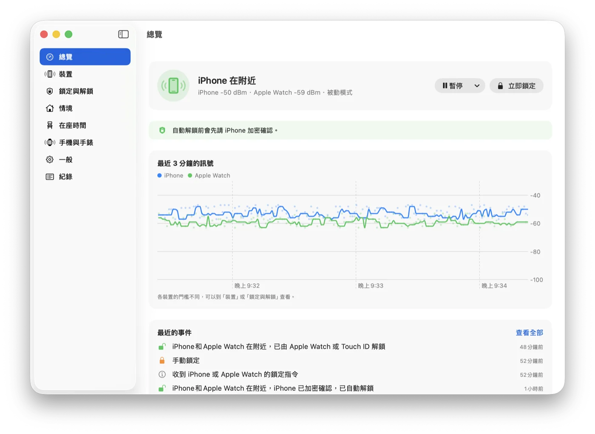
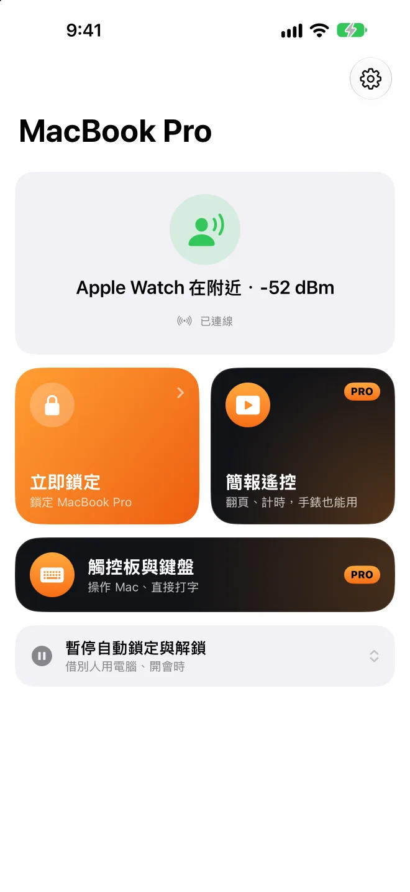
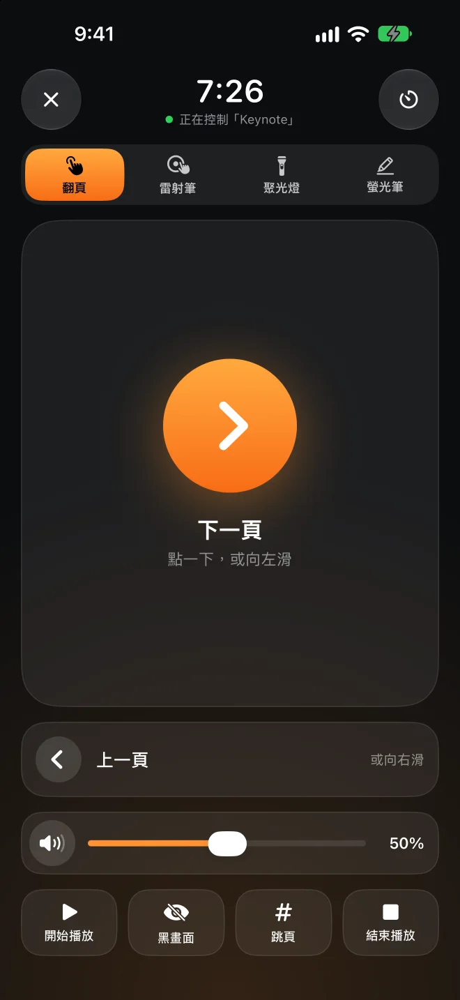

人一走，就鎖上。人回來，就打開。
Presence 是 Mac 選單列上的小工具。它聽你身上的 iPhone 或 Apple Watch 本來就會發出的藍牙訊號：訊號變弱，螢幕就鎖上；你走回座位，它幫你解開。手機和手錶不用裝任何 App。
Mac 版免費、開放原始碼，需要 macOS 26 以上。
會自動解鎖 走到這裡
幾秒後鎖定
Apple Watch 在附近−52 dBm
拖著你往右走，看 Mac 什麼時候鎖上；再走回來。
寧可晚一點解鎖，
也不要鎖錯。
藍牙訊號會跳動，人轉個身就差好幾格。Presence 用幾個保守的規則，讓你坐著不會被鎖，別人拿不到你的 Mac。
看幾秒的走勢，不看單一筆
取最近 4 秒訊號的中位數，至少要有 3 筆。一筆突然變強或變弱都不算數。
鎖定和解鎖用兩條線
鎖定的門檻比解鎖低一段。站在中間不會一直鎖了又開、開了又鎖。每台裝置可以各自校準：站在想解鎖、想鎖定的位置各量 8 秒就好。
你還在打字，就先不鎖
訊號變弱、但鍵盤滑鼠還有人在用，會先暫緩鎖定。
解鎖前先問 iPhone
裝了 Presence Remote 的話，Mac 要輸入密碼前，會先請 iPhone 用配對時交換的金鑰回答。只偽造藍牙訊號，解不開你的 Mac。
讓 Apple Watch 先解
要解鎖時先等幾秒，讓 macOS 內建的「用 Apple Watch 解鎖」先開；還鎖著才幫你輸入密碼，而且每打一段都先確認畫面還在登入畫面。
該鎖的時候鎖，不該鎖的時候別來亂。
這些都在 Mac 版裡，免費。
簡報時不會鎖
Keynote、PowerPoint 正在播放時暫停自動鎖定。走上台、離電腦遠了，投影畫面也不會突然變成登入畫面。
在家不用鎖
連上信任的網路、接著電源，或不在你設定的時段，就不自動鎖定。網路用路由器辨識，不需要定位權限。
暫停一下
借別人用電腦、開會時，暫停 15 分鐘到 4 小時。時間到了你不在，就馬上補鎖。
有人趁你不在解鎖，你會知道
你不在附近時，有人手動解開你的 Mac，事件紀錄會記下來，也可以拍照存證、通知你的 iPhone。
今天坐了多久
在座時間自己記：今天、最近 7 天，坐太久會提醒你起來動一動。
從 BLEUnlock 搬過來
Presence 的想法來自 BLEUnlock，針對新版 macOS 重寫。用過的話，一鍵匯入裝置與門檻。



上台以後，手機就是簡報筆。
不用另外買遙控器，也不用插接收器。在手機上動手指，投影幕上同一個位置就出現紅點、聚光燈或螢光筆的線。直接在下面這支手機上試試看。
選雷射筆、聚光燈或螢光筆，在手機的觸控區按住移動。螢光筆的線幾秒後會淡掉，翻頁時馬上清掉。
點一下、滑一下就翻頁
也能跳到第幾頁、讓投影畫面暫時全黑、開始與結束播放。
手機鎖著也能翻
鎖定畫面和動態島上有翻頁按鈕，手機收進口袋前不必解鎖。
Apple Watch 也是簡報筆
點按、轉錶冠，或兩指互點就翻頁。往左滑一頁調 Mac 的音量。
演講倒數
設好講幾分鐘，剩 5 分鐘、時間到時在手腕上輕敲提醒你。
調 Mac 的音量
簡報裡的影片太大聲或太小聲，不用走回電腦。投影畫面上不會跳出音量圖示。
哪個簡報軟體都行
Keynote、PowerPoint、Google 簡報、PDF 都可以。紅點和聚光燈畫在最上層，不會點到任何東西。
鎖定是免費的。簡報筆才要錢。
Mac 版和 iPhone、Apple Watch 的 Presence Remote 都可以免費使用。只有簡報遙控是 Presence Pro。
Presence Remote
iPhone 與 Apple Watch 的配套 App。
- 從手機、手錶、控制中心立即鎖定
- 暫停與恢復自動鎖定
- 離開被鎖、有人解鎖時通知你
- 解鎖前的加密確認
Presence Pro
簡報遙控：翻頁、雷射筆、聚光燈、螢光筆、音量、演講倒數，iPhone 和 Apple Watch 都能用。
兩種訂閱都可以免費試用 7 天。三種都可以和家人共享。
在 App 裡升級你的 Mac，只聽你的手機。
沒有帳號，也沒有伺服器
Mac 和手機只用藍牙直接溝通，不經過網路。開發者收不到你的任何資料。
每個指令都加密
配對時交換一把只屬於你們的金鑰，指令和狀態都用它加密、驗證。別人的手機下不了指令。
密碼只在你的鑰匙圈
自動解鎖要用的登入密碼，存在你 Mac 的鑰匙圈裡，Presence 先確認密碼正確才存。
程式碼公開
Mac 版完整開放原始碼，怎麼判斷、怎麼解鎖，都可以自己看。
常見問題
手機一定要裝 App 嗎？
不用。Presence 讀的是 iPhone 和 Apple Watch 本來就會發出的藍牙訊號，只裝 Mac 版就能自動鎖定與解鎖。裝了 Presence Remote 可以從手機遠端鎖定、收通知、解鎖前加密確認；升級 Presence Pro 再加上簡報遙控。
需要什麼裝置和系統？
Mac 要 macOS 26 以上、有藍牙 LE。Presence Remote 要 iOS 26、watchOS 26 以上。也可以只用 Apple Watch，或其他會定期廣播、位址固定的藍牙裝置。
跟 Mac 內建的「用 Apple Watch 解鎖」有什麼不一樣？
內建的只會幫你解鎖，你離開時不會鎖。Presence 兩件事都做；要解鎖時還會先等幾秒，讓內建的手錶解鎖先開，手錶沒開才幫你輸入密碼。兩個可以一起用。
我坐著不動，會不會突然被鎖？
要連續幾秒訊號都太弱才會鎖，而且鎖定門檻比解鎖低一段。偵測到你還在打字或用滑鼠，也會先暫緩。真的太敏感，在「裝置」頁重新校準就好。
為什麼 Mac 版不在 Mac App Store？
自動解鎖要模擬鍵盤輸入登入密碼，Mac App Store 的 App 不能這樣做。所以 Mac 版經過 Apple 公證，從 GitHub 下載，之後的新版會自動更新。
簡報遙控支援哪些軟體？
翻頁送的是方向鍵，Keynote、PowerPoint、Google 簡報、PDF 閱讀器都認得。雷射筆、聚光燈、螢光筆是 Presence 畫在畫面最上層的，不管投影的是什麼 App 都能用。要先在 Mac 的 Presence 打開「允許簡報遙控」。
會很耗電嗎？
iPhone 和 Apple Watch 本來就會發出這些訊號，Presence 只是在 Mac 上聽。Mac 這邊平常的 CPU 使用率不到 1%。